Simon Sí - Tu Mascota VirtualSimon Sí - Your Virtual Pet
Android y iPhone · Gratis, con anuncios y compras opcionales · Español e inglésAndroid and iPhone · Free, with ads and optional purchases · English and Spanish
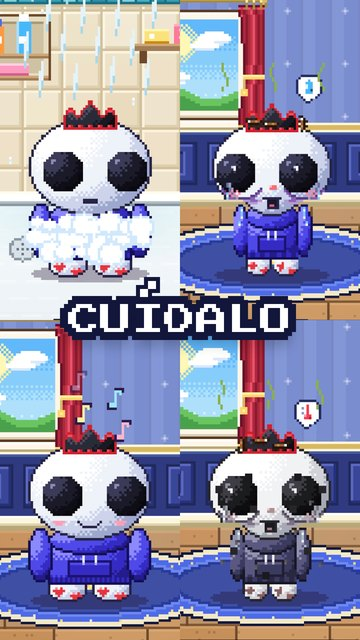
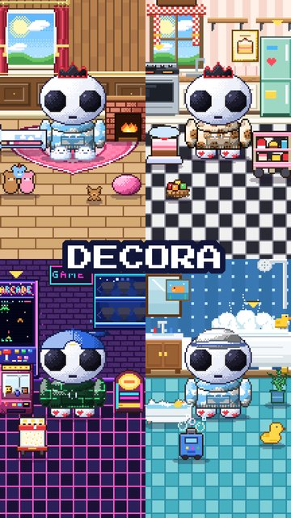
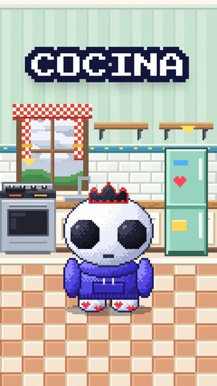
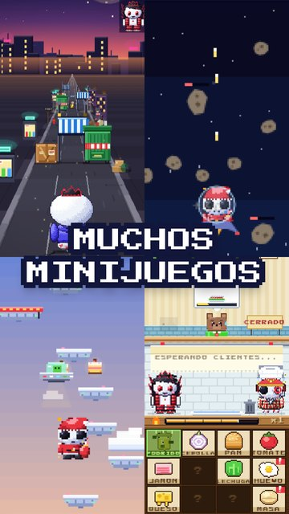
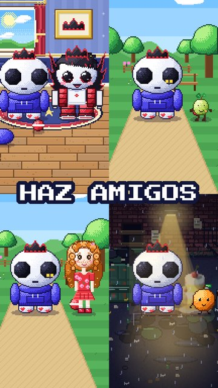
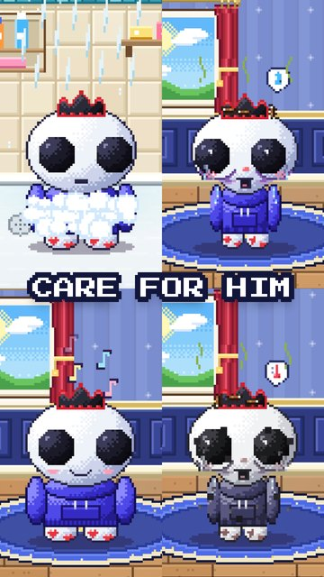
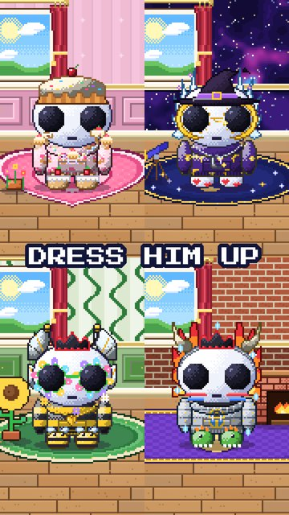
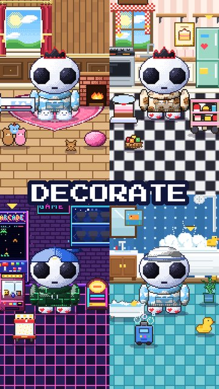
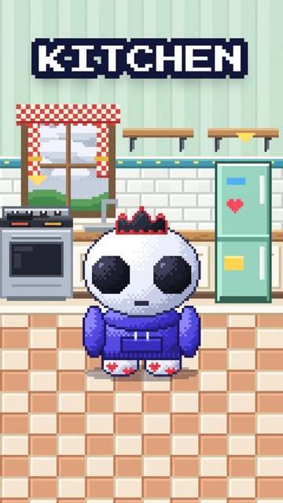
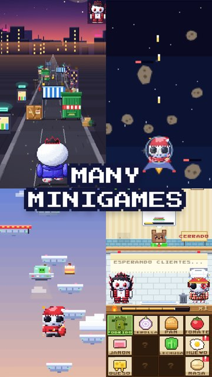
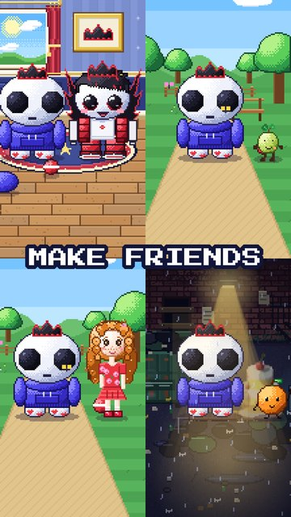
Simón es un alien que solo dice "Sí" y que llegó a la Tierra intentando escapar de su planeta, ya que tiene un poder oculto. Pero después de varios sucesos perdió la memoria y fue encontrado por Cortex en el basurero, quien decidió ayudarle… pero él no puede cuidar siempre de Simón. ¡Y ahí es donde entras tú!
Dale de comer, cuídalo, báñalo, déjalo dormir, vístelo como más te guste, decora su casa y diviértete con muchos minijuegos para ganar monedas.
Qué puedes hacer
- Cuida a Simón: su hambre, energía, felicidad y limpieza. El tiempo sigue pasando aunque cierres el juego.
- Vístelo y decora: montones de ropa, gorros, auras y muebles para cada habitación.
- Cocina y cultiva: recetas paso a paso y tu propio jardín.
- Muchos minijuegos: gana monedas para la tienda.
- Secretos: lunas especiales, estrellas fugaces, tormentas y visitas de Cortex.
Simon is an alien who only says "Yes". He came to Earth trying to escape his planet because he has a hidden power… but after several events he lost his memory and was found by Cortex in the junkyard. Cortex decided to help him, but he can't take care of Simon all the time… and that's where YOU come in!
Feed him, take care of him, give him a bath, put him to bed, dress him however you like, decorate his house and have fun with lots of minigames to earn coins.
What you can do
- Take care of Simon: his hunger, energy, happiness and cleanliness. Time keeps passing even when the game is closed.
- Dress him up and decorate: lots of clothes, hats, auras and furniture for every room.
- Cook and garden: step-by-step recipes and your own garden.
- Lots of minigames: earn coins for the shop.
- Secrets: special moons, shooting stars, storms and visits from Cortex.
MásMore
Soporte y preguntas frecuentesSupport and FAQ · Política de privacidadPrivacy policy